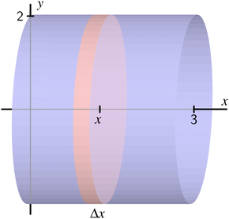
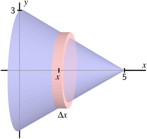
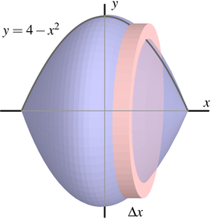
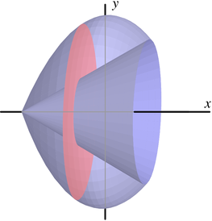
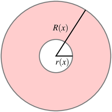
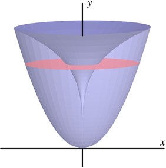
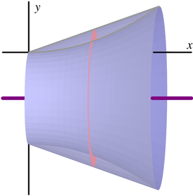

Section6.2Using Definite Integrals to Find Volume¶ permalink
{In this section, we strive to understand the ideas generated by the following important questions:
How can we use a definite integral to find the volume of a three-dimensional solid of revolution that results from revolving a two-dimensional region about a particular axis?
In what circumstances do we integrate with respect to \(y\) instead of integrating with respect to \(x\)?
What adjustments do we need to make if we revolve about a line other than the \(x\)- or \(y\)-axis?
}
Subsection6.2.1Introduction
Figure6.2.1A right circular cylinder.
Just as we can use definite integrals to add the areas of rectangular slices to find the exact area that lies between two curves, we can also employ integrals to determine the volume of certain regions that have cross-sections of a particular consistent shape. As a very elementary example, consider a cylinder of radius 2 and height 3, as pictured in Figure 6.2.1. While we know that we can compute the area of any circular cylinder by the formula \(V = \pi r^2 h\), if we think about slicing the cylinder into thin pieces, we see that each is a cylinder of radius \(r = 2\) and height (thickness) \(\triangle x\). Hence, the volume of a representative slice is
Letting \(\triangle x \to 0\) and using a definite integral to add the volumes of the slices, we find that
\[
V = \int_0^3 \pi \cdot 2^2 \, dx.
\]
Moreover, since \(\int_0^3 4\pi \, dx = 12\pi\), we have found that the volume of the cylinder is \(12\pi\). The principal problem of interest in our upcoming work will be to find the volume of certain solids whose cross-sections are all thin cylinders (or washers) and to do so by using a definite integral. To that end, we first consider another familiar shape in Preview Activity : a circular cone.
Preview Activity
Consider a circular cone of radius 3 and height 5, which we view horizontally as pictured in Figure 6.2.2. Our goal in this activity is to use a definite integral to determine the volume of the cone.
Find a formula for the linear function \(y = f(x)\) that is pictured in Figure 6.2.2.
For the representative slice of thickness \(\triangle x\) that is located horizontally at a location \(x\) (somewhere between \(x = 0\) and \(x = 5\)), what is the radius of the representative slice? Note that the radius depends on the value of \(x\).
What is the volume of the representative slice you found in (b)?
What definite integral will sum the volumes of the thin slices across the full horizontal span of the cone? What is the exact value of this definite integral?
Compare the result of your work in (d) to the volume of the cone that comes from using the formula \(V_{\text{{cone}} } = \frac{1}{3} \pi r^2 h.\)
Figure6.2.2The circular cone described in Preview Activity
Subsection6.2.2The Volume of a Solid of Revolution
\knownindex{\lt main>solid of revolution\lt /main>}
A solid of revolution is a three dimensional solid that can be generated by revolving one or more curves around a fixed axis. For example, we can think of a circular cylinder as a solid of revolution: in Figure 6.2.1, this could be accomplished by revolving the line segment from \((0,2)\) to \((3,2)\) about the \(x\)-axis. Likewise, the circular cone in Figure 6.2.2 is the solid of revolution generated by revolving the portion of the line \(y = 3 - \frac{3}{5}x\) from \(x = 0\) to \(x = 5\) about the \(x\)-axis. It is particularly important to notice in any solid of revolution that if we slice the solid perpendicular to the axis of revolution, the resulting cross-section is circular.
We consider two examples to highlight some of the natural issues that arise in determining the volume of a solid of revolution.
Find the volume of the solid of revolution generated when the region \(R\) bounded by \(y = 4-x^2\) and the \(x\)-axis is revolved about the \(x\)-axis.
Solution.
First, we observe that \(y = 4-x^2\) intersects the \(x\)-axis at the points \((-2,0)\) and \((2,0)\). When we take the region \(R\) that lies between the curve and the \(x\)-axis on this interval and revolve it about the \(x\)-axis, we get the three-dimensional solid pictured in Figure 6.2.4.
Figure6.2.4The solid of revolution in Example 6.2.3.
Taking a representative slice of the solid located at a value \(x\) that lies between \(x = -2\) and \(x = 2\), we see that the thickness of such a slice is \(\triangle x\) (which is also the height of the cylinder-shaped slice), and that the radius of the slice is determined by the curve \(y = 4-x^2\). Hence, we find that
since the volume of a cylinder of radius \(r\) and height \(h\) is \(V = \pi r^2 h\).
Using a definite integral to sum the volumes of the representative slices, it follows that
\[
V = \int_{-2}^{2} \pi (4-x^2)^2 \, dx.
\]
It is straightforward to evaluate the integral and find that the volume is \(V = \frac{512}{15}\pi\).
\hspace{5.0in}
For a solid such as the one in Example 6.2.3, where each cross-section is a cylindrical disk, we first find the volume of a typical cross-section (noting particularly how this volume depends on \(x\)), and then we integrate over the range of \(x\)-values through which we slice the solid in order to find the exact total volume. Often, we will be content with simply finding the integral that represents the sought volume; if we desire a numeric value for the integral, we typically use a calculator or computer algebra system to find that value.
The general principle we are using to find the volume of a solid of revolution generated by a single curve is often called the disk method\knownindex{\lt main>disk method\lt /main>}.
{
If \(y = r(x)\) is a nonnegative continuous function on \([a,b]\), then the volume of the solid of revolution generated by revolving the curve about the \(x\)-axis over this interval is given by
\[
V = \int_a^b \pi r(x)^2 \, dx.
\]
}
A different type of solid can emerge when two curves are involved, as we see in the following example.
Find the volume of the solid of revolution generated when the finite region \(R\) that lies between \(y = 4-x^2\) and \(y = x+2\) is revolved about the \(x\)-axis.
Solution.
First, we must determine where the curves \(y = 4-x^2\) and \(y = x+2\) intersect. Substituting the expression for \(y\) from the second equation into the first equation, we find that \(x + 2 = 4-x^2\). Rearranging, it follows that
\[
x^2 + x - 2 = 0,
\]
and the solutions to this equation are \(x = -2\) and \(x = 1\). The curves therefore cross at \((-2,0)\) and \((1,1)\).
When we take the region \(R\) that lies between the curves and revolve it about the \(x\)-axis, we get the three-dimensional solid pictured at left in Figure 6.2.6.
Figure6.2.6At left, the solid of revolution in Example 6.2.5. At right, a typical slice with inner radius \(r(x)\) and outer radius \(R(x)\).
Immediately we see a major difference between the solid in this example and the one in Example 6.2.3: here, the three-dimensional solid of revolution isn't “solid” in the sense that it has open space in its center. If we slice the solid perpendicular to the axis of revolution, we observe that in this setting the resulting representative slice is not a solid disk, but rather a washer, as pictured at right in Figure 6.2.6. Moreover, at a given location \(x\) between \(x = -2\) and \(x = 1\), the small radius \(r(x)\) of the inner circle is determined by the curve \(y = x+2\), so \(r(x) = x+2\). Similarly, the big radius \(R(x)\) comes from the function \(y = 4-x^2\), and thus \(R(x) = 4-x^2\).
Thus, to find the volume of a representative slice, we compute the volume of the outer disk and subtract the volume of the inner disk. Since
\[
\pi R(x)^2 \triangle x - \pi r(x)^2 \triangle x = \pi [ R(x)^2 - r(x)^2] \triangle x,
\]
Evaluating the integral, the volume of the solid of revolution is \(V = \frac{108}{5}\pi\).
\hspace{5.0in}
The general principle we are using to find the volume of a solid of revolution generated by a single curve is often called the washer method\knownindex{\lt main>washer method\lt /main>}.
{
If \(y = R(x)\) and \(y = r(x)\) are nonnegative continuous functions on \([a,b]\) that satisfy \(R(x) \ge r(x)\) for all \(x\) in \([a,b]\), then the volume of the solid of revolution generated by revolving the region between them about the \(x\)-axis over this interval is given by
In each of the following questions, draw a careful, labeled sketch of the region described, as well as the resulting solid that results from revolving the region about the stated axis. In addition, draw a representative slice and state the volume of that slice, along with a definite integral whose value is the volume of the entire solid. It is not necessary to evaluate the integrals you find.
The region \(S\) bounded by the \(x\)-axis, the curve \(y = \sqrt{x}\), and the line \(x = 4\); revolve \(S\) about the \(x\)-axis.
The region \(S\) bounded by the \(y\)-axis, the curve \(y = \sqrt{x}\), and the line \(y = 2\); revolve \(S\) about the \(x\)-axis.
The finite region \(S\) bounded by the curves \(y = \sqrt{x}\) and \(y = x^3\); revolve \(S\) about the \(x\)-axis.
The finite region \(S\) bounded by the curves \(y = 2x^2 + 1\) and \(y = x^2 + 4\); revolve \(S\) about the \(x\)-axis
The region \(S\) bounded by the \(y\)-axis, the curve \(y = \sqrt{x}\), and the line \(y = 2\); revolve \(S\) about the \(y\)-axis. How does the problem change considerably when we revolve about the \(y\)-axis?
As seen in Activity 6.2.7, problem (e), the problem changes considerably when we revolve a given region about the \(y\)-axis. Foremost, this is due to the fact that representative slices now have thickness \(\triangle y\), which means that it becomes necessary to integrate with respect to \(y\). Let's consider a particular example to demonstrate some of the key issues.
Find the volume of the solid of revolution generated when the finite region \(R\) that lies between \(y = \sqrt{x}\) and \(y = x^4\) is revolved about the \(y\)-axis.
Solution.
We observe that these two curves intersect when \(x = 1\), hence at the point \((1,1)\). When we take the region \(R\) that lies between the curves and revolve it about the \(y\)-axis, we get the three-dimensional solid pictured at left in Figure 6.2.9.
Figure6.2.9At left, the solid of revolution in Example 6.2.8. At right, a typical slice with inner radius \(r(y)\) and outer radius \(R(y)\).
Now, it is particularly important to note that the thickness of a representative slice is \(\triangle y\), and that the slices are only cylindrical washers in nature when taken perpendicular to the \(y\)-axis. Hence, we envision slicing the solid horizontally, starting at \(y = 0\) and proceeding up to \(y = 1\). Because the inner radius is governed by the curve \(y = \sqrt{x}\), but from the perspective that \(x\) is a function of \(y\), we solve for \(x\) and get \(x = y^2 = r(y)\). In the same way, we need to view the curve \(y = x^4\) (which governs the outer radius) in the form where \(x\) is a function of \(y\), and hence \(x = \sqrt[4]{y}\). Therefore, we see that the volume of a typical slice is
In each of the following questions, draw a careful, labeled sketch of the region described, as well as the resulting solid that results from revolving the region about the stated axis. In addition, draw a representative slice and state the volume of that slice, along with a definite integral whose value is the volume of the entire solid. It is not necessary to evaluate the integrals you find.
The region \(S\) bounded by the \(y\)-axis, the curve \(y = \sqrt{x}\), and the line \(y = 2\); revolve \(S\) about the \(y\)-axis.
The region \(S\) bounded by the \(x\)-axis, the curve \(y = \sqrt{x}\), and the line \(x = 4\); revolve \(S\) about the \(y\)-axis.
The finite region \(S\) in the first quadrant bounded by the curves \(y = 2x\) and \(y = x^3\); revolve \(S\) about the \(x\)-axis.
The finite region \(S\) in the first quadrant bounded by the curves \(y = 2x\) and \(y = x^3\); revolve \(S\) about the \(y\)-axis.
The finite region \(S\) bounded by the curves \(x = (y-1)^2\) and \(y = x-1\); revolve \(S\) about the \(y\)-axis
Subsection6.2.4Revolving about horizontal and vertical lines other than the coordinate axes
Just as we can revolve about one of the coordinate axes (\(y = 0\) or \(x = 0\)), it is also possible to revolve around any horizontal or vertical line. Doing so essentially adjusts the radii of cylinders or washers involved by a constant value. A careful, well-labeled plot of the solid of revolution will usually reveal how the different axis of revolution affects the definite integral we set up. Again, an example is instructive.
Find the volume of the solid of revolution generated when the finite region \(S\) that lies between \(y = x^2\) and \(y = x\) is revolved about the line \(y = -1\).
Solution.
Figure6.2.12The solid of revolution described in Example 6.2.11.
Graphing the region between the two curves in the first quadrant between their points of intersection (\((0,0)\) and \((1,1)\)) and then revolving the region about the line \(y = -1\), we see the solid shown in Figure 6.2.12. Each slice of the solid perpendicular to the axis of revolution is a washer, and the radii of each washer are governed by the curves \(y = x^2\) and \(y = x\). But we also see that there is one added change: the axis of revolution adds a fixed length to each radius. In particular, the inner radius of a typical slice, \(r(x)\), is given by \(r(x) = x^2 + 1\), while the outer radius is \(R(x) = x+1\). Therefore, the volume of a typical slice is
In each of the following questions, draw a careful, labeled sketch of the region described, as well as the resulting solid that results from revolving the region about the stated axis. In addition, draw a representative slice and state the volume of that slice, along with a definite integral whose value is the volume of the entire solid. It is not necessary to evaluate the integrals you find. For each prompt, use the finite region \(S\) in the first quadrant bounded by the curves \(y = 2x\) and \(y = x^3\).
\item We can use a definite integral to find the volume of a three-dimensional solid of revolution that results from revolving a two-dimensional region about a particular axis by taking slices perpendicular to the axis of revolution which will then be circular disks or washers.
\item If we revolve about a vertical line and slice perpendicular to that line, then our slices are horizontal and of thickness \(\triangle y\). This leads us to integrate with respect to \(y\), as opposed to with respect to \(x\) when we slice a solid vertically.
\item If we revolve about a line other than the \(x\)- or \(y\)-axis, we need to carefully account for the shift that occurs in the radius of a typical slice. Normally, this shift involves taking a sum or difference of the function along with the constant connected to the equation for the horizontal or vertical line; a well-labeled diagram is usually the best way to decide the new expression for the radius.
\hrulefill
\begin{exercises}
\item Consider the curve \(f(x) = 3 \cos(\frac{x^3}{4})\) and the portion of its graph that lies in the first quadrant between the \(y\)-axis and the first positive value of \(x\) for which \(f(x) = 0\). Let \(R\) denote the region bounded by this portion of \(f\), the \(x\)-axis, and the \(y\)-axis.
Set up a definite integral whose value is the exact arc length of \(f\) that lies along the upper boundary of \(R\). Use technology appropriately to evaluate the integral you find.
Set up a definite integral whose value is the exact area of \(R\). Use technology appropriately to evaluate the integral you find.
Suppose that the region \(R\) is revolved around the \(x\)-axis. Set up a definite integral whose value is the exact volume of the solid of revolution that is generated. Use technology appropriately to evaluate the integral you find.
Suppose instead that \(R\) is revolved around the \(y\)-axis. If possible, set up an integral expression whose value is the exact volume of the solid of revolution and evaluate the integral using appropriate technology. If not possible, explain why.
\item Consider the curves given by \(y = \sin(x)\) and \(y = \cos(x)\). For each of the following problems, you should include a sketch of the region/solid being considered, as well as a labeled representative slice.
Sketch the region \(R\) bounded by the \(y\)-axis and the curves \(y = \sin(x)\) and \(y = \cos(x)\) up to the first positive value of \(x\) at which they intersect. What is the exact intersection point of the curves?
Set up a definite integral whose value is the exact area of \(R\).
Set up a definite integral whose value is the exact volume of the solid of revolution generated by revolving \(R\) about the \(x\)-axis.
Set up a definite integral whose value is the exact volume of the solid of revolution generated by revolving \(R\) about the \(y\)-axis.
Set up a definite integral whose value is the exact volume of the solid of revolution generated by revolving \(R\) about the line \(y = 2\).
Set up a definite integral whose value is the exact volume of the solid of revolution generated by revolving \(R\) about the \(x = -1\).
\item Consider the finite region \(R\) that is bounded by the curves \(y = 1+\frac{1}{2}(x-2)^2\), \(y=\frac{1}{2}x^2\), and \(x = 0\).
Determine a definite integral whose value is the area of the region enclosed by the two curves.
Find an expression involving one or more definite integrals whose value is the volume of the solid of revolution generated by revolving the region \(R\) about the line \(y = -1\).
Determine an expression involving one or more definite integrals whose value is the volume of the solid of revolution generated by revolving the region \(R\) about the \(y\)-axis.
Find an expression involving one or more definite integrals whose value is the perimeter of the region \(R\).